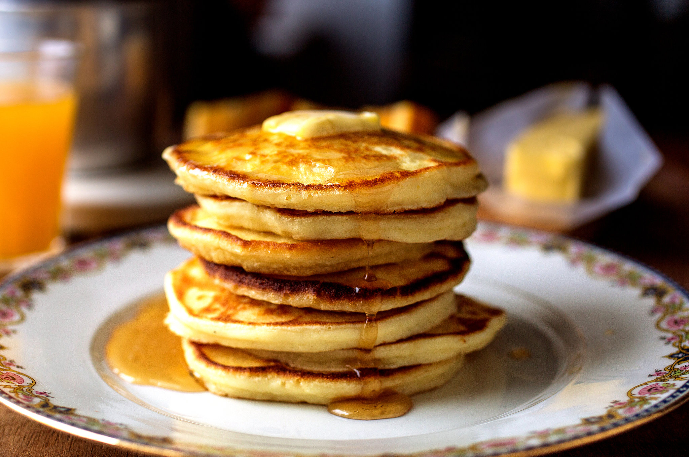

Pancakes
This pancake recipe produces thick, fluffy, and all-around delicious pancakes.
Cook this recipe a few times and it may become part of your weekly routine.
Ingredients
- 2 cups all-purpose flour
- 2 teaspoons baking powder
- ¼ teaspoon salt
- 1 tablespoon sugar
- 2 eggs
- 1½ to 2cups milk
- 2 tablespoons melted and cooled butter, plus unmelted butter for cooking, or use neutral oil
Steps
- Heat a griddle or large skillet over medium-low heat. In a bowl, mix together dry ingredients. Beat eggs into 1½ cups milk, then stir in 2 tablespoons melted cooled butter, if using it. Gently stir this mixture into dry ingredients, mixing only enough to moisten flour; don't worry about a few lumps. If batter seems thick, add a little more milk.
- Place a teaspoon or 2 of butter or oil on griddle or skillet. When butter foam subsides or oil shimmers, ladle batter onto griddle or skillet, making pancakes of any size you like. Adjust heat as necessary; usually, first batch will require higher heat than subsequent batches. Flip pancakes after bubbles rise to surface and bottoms brown, after 2 to 4 minutes.
- Cook until second side is lightly browned. Serve, or hold on an ovenproof plate in a 200-degree oven for up to 15 minutes.